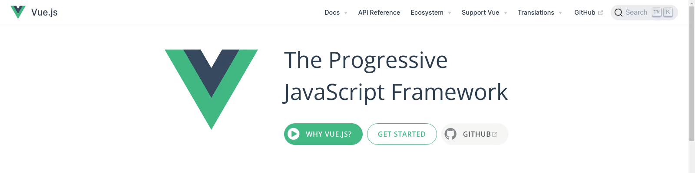
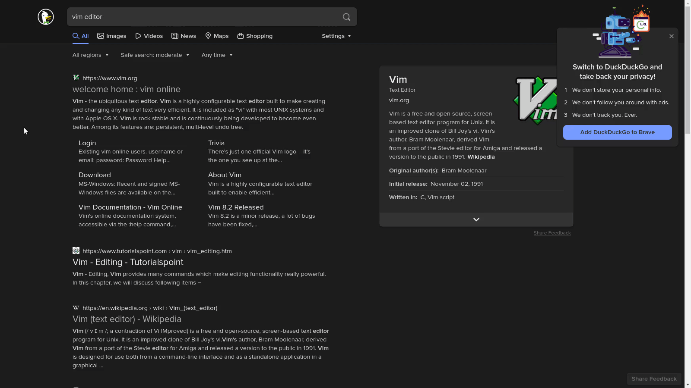
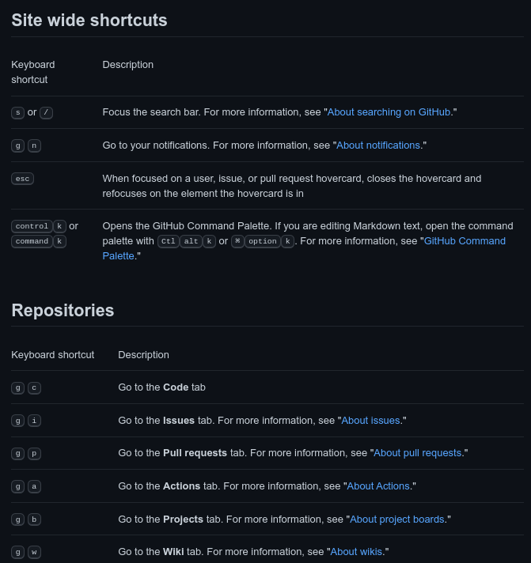
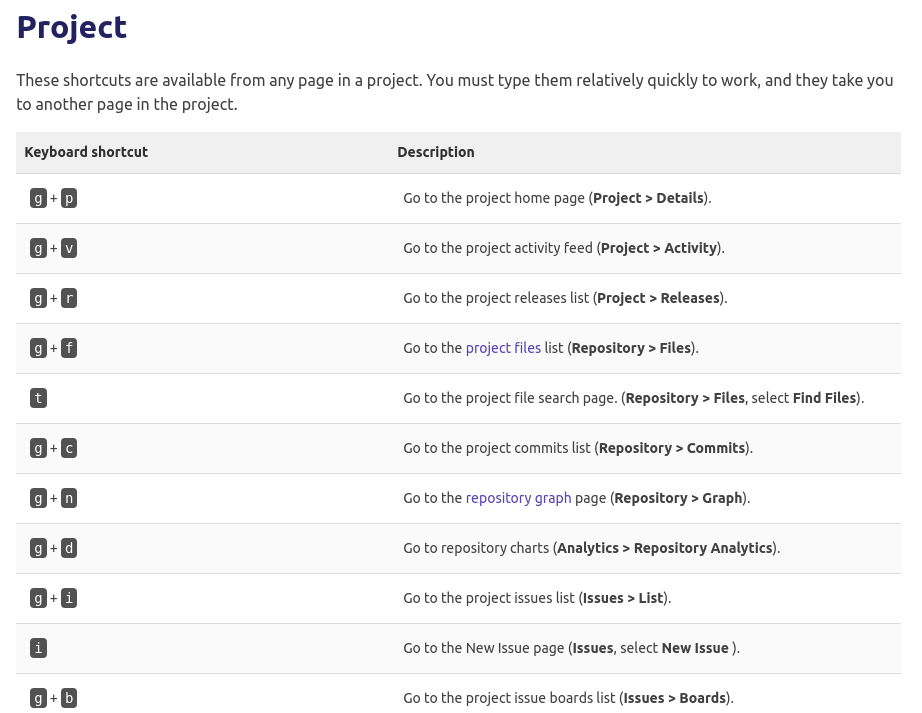

Vim is Everywhere
by @dosisodWhy should I care?
Lots of people will tell you how powerful Vim is, and how much time you can save. A lot of their arguments are correct, but I want to take a different approach: Vim is all around you, and by showing all of the things it has influenced, perhaps I might convince you to start using it.
Background
For starters, vim (VI-iMproved) came out in 1991. Its
predessesor, vi, came out in 1979. neovim
, a more modern fork of vim came out in 2014. In general,
whenever someone says "vim", they are normally talking about the core
movements that vi provides, and the improved featureset
of vim (unless otherwise noted).
Vim on the web
In vim, / is used to start searching for something. On the Vue website (which is powered by Algolia), / is used to start searching for something:
On duckduckgo, you can use j to move down a search result, and k to go up one. In vim, the j/k keys are also used to go up and down a line:
In vim, g can be followed up with many other characters to provide easy access to a bunch of features, such as gf to go to the file name under the cursor, gd to go to the definition of a function/variable, and gg to go to the top of the file. Many websites offer keyboard shortcuts, starting with g, which are used to navigate around:
GitHub:  GitLab: Vim in your IDE
Specifically I am talking about VSCode, but your text editor might
have similar features. In vscode, when you open the command pallete,
you can type :123 to go to line 123, the same way you
would do it in vim:
Vim in your terminal
Now there are an infinite amount of examples I could use here, but I will try to stick to using just what is readily/probably already avaiable on your system.
Firstly, in bash, you can run set -o vi to enable
vi-like movements as you edit (j/k to go to the
next/previous command, h/l to move left/right
in the current line, x to delete the currently selected
character, etc).
Whenever you type git commit in your terminal, an editor will
open up, and sometimes, it will be vim (this dependes on the EDITOR
and VISUAL environment variables). The same thing happens
when you do an interactive rebase, or a git merge (sometimes).

Sometimes when running commands with lots of output, it will open it in
a pager, usually less or more. You can check
by running readlink -f $(which pager). In less, you can use
the arrow keys to move around, but you can also use j/kk
to move up and down, ud to move up and down (half a page),
/ to search, n/N to go to next and previous
search result respectivley, and q to quit. All of these are similar to
vim, except for quitting (in vim it is :q instead).